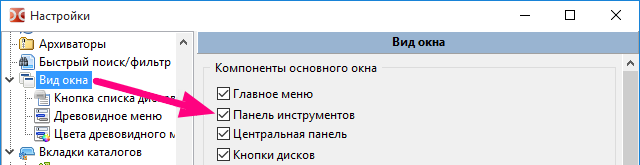
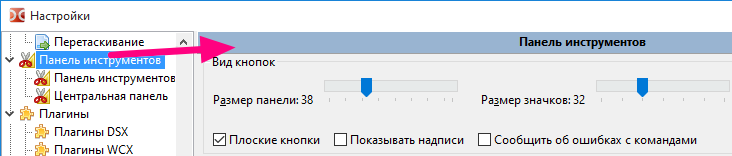
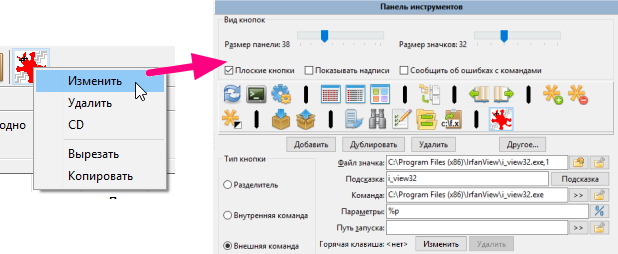
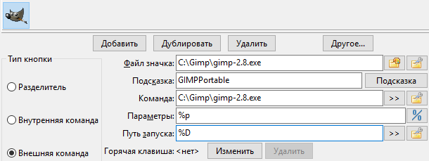
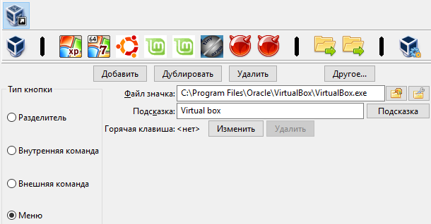

При активной работе с двухпанельным файловым менеджером, как Double Commander, бывает необходимо запустить приложение и мы можем использовать наш файловый менеджер непосредственно, вместо того, чтобы добираться до ярлыка на рабочем столе, в панели задач или меню Пуск.
Это особенно актуально для частых задач.
Панель инструментов позволит каждому настроить кнопки для часто используемых функций.
Double Commander предлагает также множество возможных параметров на основе текущего или выделенных файлов, что позволить нам передать их в качестве параметров запускаемому приложению.
Ниже панель инструментов Double Commander с настройками по умолчанию, вы можете настроить её под свои потребности и предпочтения.

Панель инструментов будет отображаться или скрыта в зависимости от того, что задано в параметрах "Вид окна".
Чтобы активировать её, мы просто должны убедится, что отметили параметр "Панель инструментов".

Всё, что может быть добавлено на панель инструментов, представлено в таблице
| Возможные элементы панели инструментов | |
|---|---|
| Элементы | Описание |
| Вертикальная полоса, чтобы помочь нам группировать схожие функции и/или схожий контекст. | |
| Вызов внутренней команды Double Commander. | |
| Запуск внешнего приложения, исполняемого файла, скрипта и т.д. | |
| Кнопка на главной панели инструментов с выпадающим меню из остальных элементов. | |
Чтобы изменить содержимое панели инструментов, нам нужно её настроить.
Конечно, мы можем вызвать окно настроек Double Commander, прокрутить список слева до пункта "Панель инструментов".

Другой, быстрый, способ добраться непосредственно до настроек: щёлкнуть правой кнопкой мыши по свободному месту на панели и выбрать в меню пункт "Редактировать".
Также возможно не только открыть настройки панели инструментов, но и сразу перейти к редактированию выбранной кнопки, для этого нужно щёлкнуть по ней правой кнопкой мыши и выбрать пункт "Редактировать".

Разделитель — это просто вертикальная полоска, которая может быть использована для того, чтобы отделить и сгруппировать кнопки со схожими действиями.
У разделителя нет никаких активных функций, это просто декоративный элемент для удобства восприятия.
В примере ниже разделителями отделены функции, связанные со сравнением, буфером обмена и т.д.

Внутренние команды — это различные действия самого Double Commander, не требующие вызова внешнего приложения.
Команды чрезвычайно разнообразны, описание всех внутренних команд можно посмотреть на этой странице.
Например, если мы хотим добавить на панель инструментов кнопку поиска, то просто выбираем "cm_Search" из выпадающего списка команд.
Как видим на рисунке ниже, мы можем выбрать свой значок для кнопки, но, как правило, достаточно просто выбрать команду из списка и использовать связанный с ней значок.
Также есть всплывающая подсказка: можно добавить описание кнопки, которое появится при наведении курсора.
Пример с командой "cm_Search":
Некоторые команды могут принимать параметры, мы можем добавить их в поле параметров.
В следующем примере мы используем внутреннюю команду "cm_ChangeDir" и добавим два параметра с каталогами для обеих файловых панелей.
Внешние команды связаны с действиями, требующие вызов внешней программы.
Для внешних команд у нас есть возможность установить ещё несколько параметров, которые позволят точно настроить вызов приложения (каталог запуска и то, что мы хотим при необходимости передать в качестве параметров).
Что касается параметров, вы можете выбрать пользовательские переменные, которые будут заменены на их реальные значения (файл под курсором в активной или неактивной панели и т.д.). Список доступных переменных можно посмотреть на этой странице.
В следующем примере мы добавили на панель инструментов кнопку для запуска GIMP с параметром %p: когда мы нажимаем на кнопку, в качестве параметра для GIMP будет передано полное имя файла под курсором в активной панели.

Если мы добавим на панель инструментов много кнопок, то может не хватить места, чтобы все наши кнопки были на одной горизонтальной линии.
Чтобы получить больше кнопок, мы можем добавить специальный тип кнопки, что-то вроде панели инструментов, но в виде меню.
Рассмотрим следующий пример, где мы добавим тип кнопки "Меню".
При добавлении кнопки ниже появится новое подменю панели инструментов, которое заполняется аналогично.
Этот пример также демонстрирует, как мы можем сгруппировать кнопки, связанные с той или иной задачей.
В примере ниже дополнительная панель инструментов содержит кнопки запуска виртуальных машин с различными типами ОС.

Вот что получится в итоге:

Таким образом дополнительная панель инструментов может содержать все те элементы, что были описаны ранее.
Мы даже можем добавить дополнительную панель инструментов внутри дополнительной панели инструментов и так далее.
Такая дополнительная панель будет отображаться как вложенное меню.
Смотрите пример ниже: